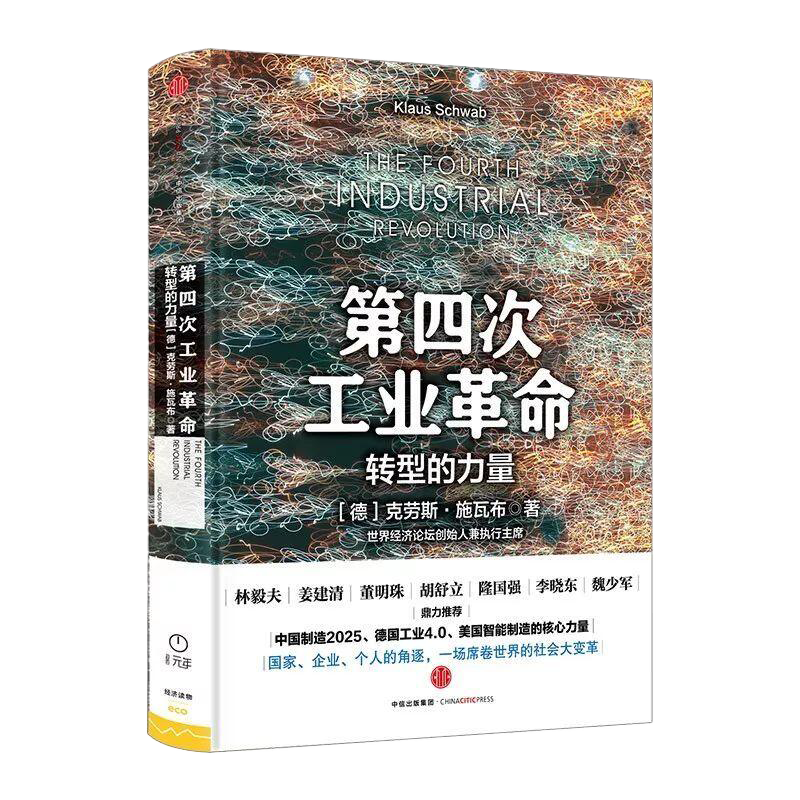

《第四次工业革命》读书分享
首先我们谈一谈工业革命，我们知道第一次工业革命以蒸汽技术开启了机器代替手工劳动的时代；第二次工业革命以电力技术促使世界经济、科技快速发展，让世界逐步成为一个整体；第三次工业革命是以计算机及信息技术对世界格局产生了重大影响。那第四次工业革命是将各领域的技术融合、互动，从而对世界产生巨大影响。看完这本施瓦布的《第四次工业革命》后，我对第四次工业革命的认识是宏观且散碎的。对我个人而言该书适合泛读而不是细品，其书对大众最主要起到了一个扫盲和科普的作用吧。我认为《第四次工业革命》这本书中很多问题与解释是没有理清的，施瓦布可能是将重点引向了“这一阶段很重要”的观点，而可能主动忽视了这些问题。
2023-4-21
